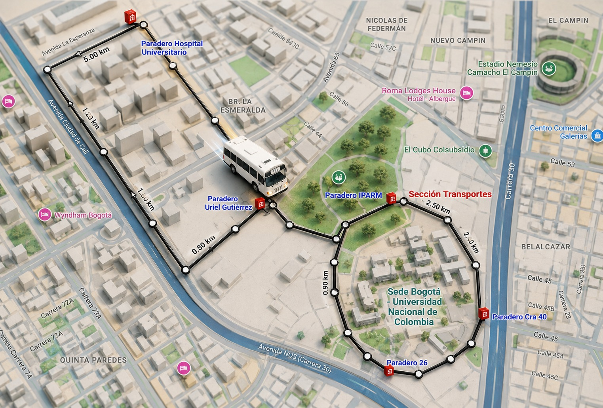

Panel semanal del transporte interno
Datos recolectados del sistema de conteo de pasajeros.
● Sistema operativo
Actualización automática cada 30 s
--
Pasajeros registrados
--
Lunes a viernes
Día de mayor demanda
--
-- pasajeros
Hora pico de la semana
--
Franja de mayor demanda
Máxima ocupación
--
Pasajeros a bordo
Promedio de ocupación
--
Pasajeros a bordo
Demanda de pasajeros por día
Demanda de pasajeros por hora
Tabla semanal
| Día | Subieron | Máx. ocupación | Hora pico |
|---|
Conclusiones de la semana
Ruta del servicio de transporte interno
Recorrido realizado por la ruta.
